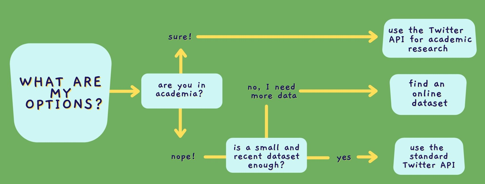

Nowadays, a lot of linguistics research uses language data from Twitter. At every major linguistics conference, there's at least one or two people (if not more!) discussing the use of language on this popular social network. Even though doing research on language use on Twitter is quite trendy now, getting the data for research is not that cool. The reason behind this? There are several ways to get Twitter data and each way depends on a variety of factors, which makes the process a bit confusing.
In this blog post, I'll walk you through the main options you have when searching for Twitter data. You can start by identifying what option works best for you in the diagram below. In the remaining of the post, I describe these options more in depth, so keep reading!

This is a relatively new API that Twitter has launched because a lot of academic researchers were interested in accessing data from Twitter. However, in order to be able to use this API, you need to submit an application first. Basically, they just want to make sure you really are an academic (e.g., professor, postdoc, grad student) before giving you access to the data. If you think you qualify for this option, you can find the application here.
This Twitter API is great because it will allow you to access the full history of public conversations, download up to 10 million tweets a month, use advanced filters to find all the data you are looking for. You can find more details here.
Needless to say, you can't use the data for commercial purposes, as Twitter only allows you to use this API for free as long as you want the data for research.
The Twitter data you download will be in JSON format, and will contain both the tweets and the meta-data associated to them. If you want to download your data directly in R, for example, and convert it to a dataframe, you can use the academictwitteR package. There's also a Python library called tawrc for the same purpose.
The previous option was awesome, but what if you're not an academic and can't access the Twitter API for academic research? Well, there is another API which is more limited but still good: the standard Twitter API. For this one, you don't need to submit an application, though you will definitely need to create a Twitter developer account. As you can imagine, this process is fast!
Now, the standard Twitter API has some disadvantages. For example, you can only download up to 500,000 tweets a month (almost nothing compared to the 10 million tweets you could download if you were an academic). Also, the tweets you download can't be older than 7-10 days. However, depending on the type of linguistics research you plan to do, this might be more than enough for you!
This time, all your Twitter data will still be in JSON format, as you're downloading the same type of data as if you had access to the academic Twitter API.
So far, all the options involve downloading your own data in one way or another. But, what if you want a large dataset about a very specific topic? Chances are there is an online dataset on that topic which you can download and use.
There are several lists of available datasets that you can browse to see if any of them matches what you are looking for. For example, Catalog contains a curated list of publicly available datasets. This public Github repo is another good option to find Twitter datasets.
In this case, not all datasets will follow the JSON format (for example, you might find some of them in csv format instead).